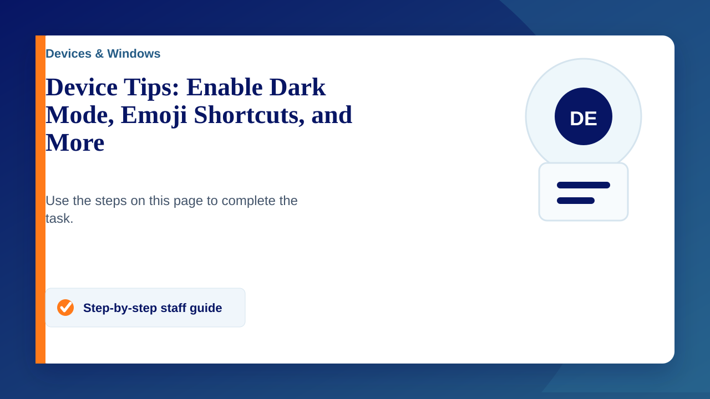

Here are some quick and helpful tips to make using your devices easier. Whether you’re on Windows, Mac, or Chromebook, there’s something for everyone!
1. Enable Dark Mode
Reduce eye strain and work comfortably in low light.
- Windows: Go to Settings > Personalisation > Colours and select Dark.
- Mac: Go to System Preferences > General > Appearance and select Dark.
- Chromebook: Go to Settings > Personalisation > Set wallpaper & style, then select Dark theme.
2. Use Emoji Shortcuts
Quickly add emojis to emails, documents, or chats.
- Windows: Press Win + . (period).
- Mac: Press Ctrl + Command + Space.
- Chromebook: Right-click in a text field and select Emoji, or press Search + Shift + Space.
3. Quickly Split Your Screen
Work more efficiently by viewing two windows side by side.
- Windows: Drag a window to the side of the screen or press Win + Left/Right Arrow.
- Mac: Hover over the green button in the top-left of a window and choose Tile Window to Left/Right of Screen.
- Chromebook: Drag the window to the side or press Alt + [ (left bracket) or Alt + ] (right bracket).
4. Use Dictation for Quick Notes
Let your device type what you say—perfect for capturing ideas quickly.
- Windows: Press Win + H to enable dictation.
- Mac: Go to System Preferences > Keyboard > Dictation to turn it on.
- Chromebook: Go to Settings > Accessibility, enable Dictation, and use the mic icon in the status bar.
5. Search Your Device Faster
Find files, apps, or settings instantly.
- Windows: Press Win + S to open the search bar.
- Mac: Press Command + Space for Spotlight Search.
- Chromebook: Press the Search key (or Launcher key) on your keyboard.
6. Adjust Zoom Quickly
Zoom in or out on webpages, documents, or images.
- Windows/Mac/Chromebook: Press Ctrl + Plus/Minus to zoom in or out.
Give these tips a try!
They’re simple but can make a big difference in your day-to-day tasks. If you have any questions or need help setting something up, just let us know.